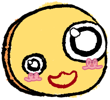
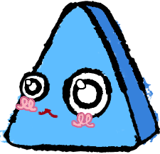

Diving deep into the digital world's caves you enter someone's nest...
G
l
o
i
n
k
s
!
They are small mischievous critters that steal anything and everything they run into. Why do these humanoid hash browns do this?


- Gloinks come in many shapes and forms, mainly geometrical though.
- In this "game" you will spectate them bouncing and flying around the screen aimlessly.
- Hover over with a mouse to grab or make them run into different direction! Maybe get them in a same gloink pile too.